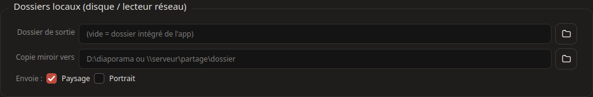
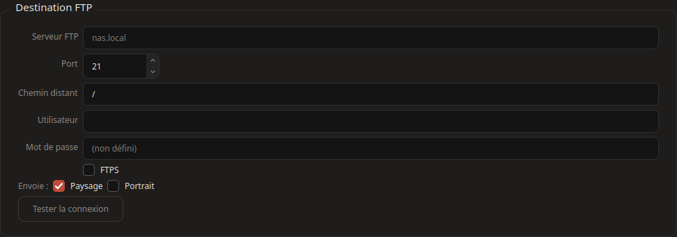
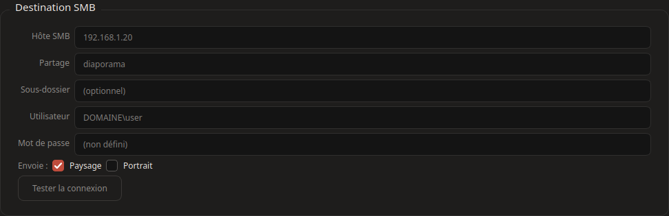

Chaque génération écrit les diapos dans le dossier de sortie, puis les pousse vers toutes les destinations remplies — une destination en échec ne bloque pas les autres (l'erreur part en warning dans le journal).

Dossier de sortie — vide = dossier intégré de l'app (data/diaporama). Utile pour écrire directement sur un lecteur réseau monté.
Copie miroir — clone la sortie vers un autre dossier (partage, clé USB…) sans serveur.
FTP — envoi vers un serveur FTP ; cochez TLS pour chiffrer. SMB — partage Windows (hôte + partage + chemin). Dans les deux cas : « Tester la connexion » avant la première génération.


Paysage / Portrait par destination — chaque destination choisit les layouts qu'elle reçoit : ne poussez l'A4 que là où il sert (impression), pas sur les écrans.
Secrets — mots de passe et clé API : stockés de préférence dans le trousseau système, ou lus depuis les variables d'environnement NEXTEVENTS_FTP_PASS (etc.) ; le champ vide garde la valeur enregistrée.
Attention, miroir : les synchros suppriment à distance les fichiers générés absents en local (manifeste d'intégrité poussé en dernier) — utilisez des dossiers de destination dédiés.